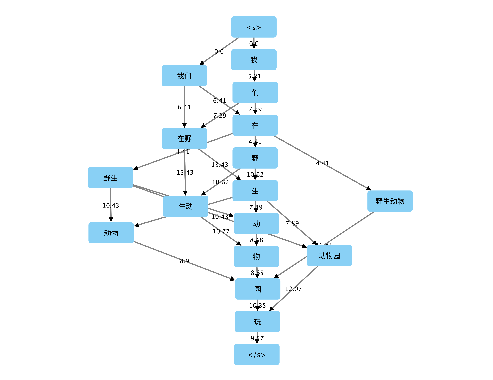

<!DOCTYPE html>
<html lang="zh" dir="auto">

<head><meta charset="utf-8">
<meta http-equiv="X-UA-Compatible" content="IE=edge">
<meta name="viewport" content="width=device-width, initial-scale=1, shrink-to-fit=no">
<meta name="robots" content="index, follow">
<title>构建中文分词器 - 有向无环图法 | Xiaoquan Kong&#39;s Blog</title>
<meta name="keywords" content="">
<meta name="description" content="将所有可能的分词结果按照词语构建成一个有向无环图，寻找其中联合概率最大的路径。">
<meta name="author" content="Xiaoquan Kong">
<link rel="canonical" href="https://xiaoquankong.ai/zh/posts/implementing-a-dag-based-chinese-tokenizer/">
<link crossorigin="anonymous" href="/assets/css/stylesheet.6241554ba6657cb3d8ee7df2a72ca4c7d99bc1a124d451815cd614cf9e887b2f.css" integrity="sha256-YkFVS6ZlfLPY7n3ypyykx9mbwaEk1FGBXNYUz56Iey8=" rel="preload stylesheet" as="style">
<link rel="icon" href="https://xiaoquankong.ai/favicon.ico">
<link rel="icon" type="image/png" sizes="16x16" href="https://xiaoquankong.ai/favicon-16x16.png">
<link rel="icon" type="image/png" sizes="32x32" href="https://xiaoquankong.ai/favicon-32x32.png">
<link rel="apple-touch-icon" href="https://xiaoquankong.ai/apple-touch-icon.png">
<link rel="mask-icon" href="https://xiaoquankong.ai/safari-pinned-tab.svg">
<meta name="theme-color" content="#2e2e33">
<meta name="msapplication-TileColor" content="#2e2e33">
<link rel="alternate" hreflang="zh" href="https://xiaoquankong.ai/zh/posts/implementing-a-dag-based-chinese-tokenizer/">
<noscript>
    <style>
        #theme-toggle,
        .top-link {
            display: none;
        }

    </style>
    <style>
        @media (prefers-color-scheme: dark) {
            :root {
                --theme: rgb(29, 30, 32);
                --entry: rgb(46, 46, 51);
                --primary: rgb(218, 218, 219);
                --secondary: rgb(155, 156, 157);
                --tertiary: rgb(65, 66, 68);
                --content: rgb(196, 196, 197);
                --hljs-bg: rgb(46, 46, 51);
                --code-bg: rgb(55, 56, 62);
                --border: rgb(51, 51, 51);
            }

            .list {
                background: var(--theme);
            }

            .list:not(.dark)::-webkit-scrollbar-track {
                background: 0 0;
            }

            .list:not(.dark)::-webkit-scrollbar-thumb {
                border-color: var(--theme);
            }
        }

    </style>
</noscript><script async src="https://pagead2.googlesyndication.com/pagead/js/adsbygoogle.js?client=ca-pub-1346745834635165" crossorigin="anonymous"></script>
<script async src="https://www.googletagmanager.com/gtag/js?id=G-ED44PRBHE8"></script>
<script>
var doNotTrack = false;
if (!doNotTrack) {
	window.dataLayer = window.dataLayer || [];
	function gtag(){dataLayer.push(arguments);}
	gtag('js', new Date());
	gtag('config', 'G-ED44PRBHE8', { 'anonymize_ip': false });
}
</script>
<meta property="og:title" content="构建中文分词器 - 有向无环图法" />
<meta property="og:description" content="将所有可能的分词结果按照词语构建成一个有向无环图，寻找其中联合概率最大的路径。" />
<meta property="og:type" content="article" />
<meta property="og:url" content="https://xiaoquankong.ai/zh/posts/implementing-a-dag-based-chinese-tokenizer/" /><meta property="og:image" content="https://xiaoquankong.ai/papermod-cover.png"/><meta property="article:section" content="posts" />


<meta name="twitter:card" content="summary_large_image"/>
<meta name="twitter:image" content="https://xiaoquankong.ai/papermod-cover.png"/>

<meta name="twitter:title" content="构建中文分词器 - 有向无环图法"/>
<meta name="twitter:description" content="将所有可能的分词结果按照词语构建成一个有向无环图，寻找其中联合概率最大的路径。"/>


<script type="application/ld+json">
{
  "@context": "https://schema.org",
  "@type": "BreadcrumbList",
  "itemListElement": [
    {
      "@type": "ListItem",
      "position":  1 ,
      "name": "Posts",
      "item": "https://xiaoquankong.ai/zh/posts/"
    }, 
    {
      "@type": "ListItem",
      "position":  2 ,
      "name": "构建中文分词器 - 有向无环图法",
      "item": "https://xiaoquankong.ai/zh/posts/implementing-a-dag-based-chinese-tokenizer/"
    }
  ]
}
</script>
<script type="application/ld+json">
{
  "@context": "https://schema.org",
  "@type": "BlogPosting",
  "headline": "构建中文分词器 - 有向无环图法",
  "name": "构建中文分词器 - 有向无环图法",
  "description": "将所有可能的分词结果按照词语构建成一个有向无环图，寻找其中联合概率最大的路径。\n",
  "keywords": [
    
  ],
  "articleBody": "将所有可能的分词结果按照词语构建成一个有向无环图，寻找其中联合概率最大的路径。\n解释 所需的语料是一个包含词语频率的字典。查找所有可能的分词结果可以通过查找字典中的词是否在一个字符串的开始位置来完成。\n构建成有向无环图后，我们找出所有路径中联合概率（朴素观点为：各个\u0008词语概率相乘）最大的路径。但一般情况下图理论和图相关的库都是用来求解最短路径（所有路径中权重之和最小的路径），因此这里做数学上的变换，能够按照最小路径求解的方式，找到联合概率最大的路径。\u0008具体变动如下:\n使用 log 函数将求解相乘问题转换成相加问题 log(a * b) = log(a) + log(b) 使用倒数函数将求解最大问题变成求解最小问题 a \u003e b then 1/a \u003c 1/b 示例 以 我们在野生动物园玩 为例，假设我们的词典里只包含如下词汇\n词汇 频数 概率 概率的倒数 log(概率的倒数) 我们 30 0.30 3.3 1.19 在 40 0.40 2.5 3.69 在野 2 0.02 50 3.91 野生动物园 8 0.08 12.5 2.53 物 1 0.01 100 4.61 园 1 0.01 100 4.61 玩 18 0.18 5.6 1.72 NOTE : log 函数在这里是以自然对数 e 为低的\u0008，等同于函数 ln\n从 我们在野生动物园玩 开始，扫描词汇表，找到匹配的前缀词汇。\n第一轮找到词汇 我们，剩余未分词\u0008\u0008字符串为 在野生动物园玩 第二轮找到词汇 在 和 在野，剩余未分词字符串为 野生动物园玩 和 生动物园玩 第三轮则对上面两个未分词字符串，应用相同的规则分词，得到词汇 野生动物园 和 生动 如此重复直到所有的未分词字符串为空。 经过上述步骤，我们得到两种分词可能\n我们 / 在 / 野生动物园 / 玩 我们 / 在野 / 生动 / 物 / 园 / 玩 添加开始节点 和 结束节点 后，我们可以构建一个 有向无环图, 节点之间的边的权重为上一个节点对应的 log(概率的倒数)。\n则得到类似如下的有向无环图：\n通过求解最小路径的方法可以得到最短路径为 我们 / 在 / 野生动物园 / 玩\n局限 因为基于词典，因此不具备新词发现的能力，同时也很难处理歧义问题。\n",
  "wordCount" : "130",
  "inLanguage": "zh",
  "datePublished": "0001-01-01T00:00:00Z",
  "dateModified": "0001-01-01T00:00:00Z",
  "author":{
    "@type": "Person",
    "name": "Xiaoquan Kong"
  },
  "mainEntityOfPage": {
    "@type": "WebPage",
    "@id": "https://xiaoquankong.ai/zh/posts/implementing-a-dag-based-chinese-tokenizer/"
  },
  "publisher": {
    "@type": "Organization",
    "name": "Xiaoquan Kong's Blog",
    "logo": {
      "@type": "ImageObject",
      "url": "https://xiaoquankong.ai/favicon.ico"
    }
  }
}
</script>
</head>

<body class="" id="top">
<script>
    if (localStorage.getItem("pref-theme") === "dark") {
        document.body.classList.add('dark');
    } else if (localStorage.getItem("pref-theme") === "light") {
        document.body.classList.remove('dark')
    } else if (window.matchMedia('(prefers-color-scheme: dark)').matches) {
        document.body.classList.add('dark');
    }

</script>

<header class="header">
    <nav class="nav">
        <div class="logo">
            <a href="https://xiaoquankong.ai/zh/" accesskey="h" title="Xiaoquan Kong&#39;s Blog (Alt + H)">Xiaoquan Kong&#39;s Blog</a>
            <div class="logo-switches">
                <button id="theme-toggle" accesskey="t" title="(Alt + T)">
                    <svg id="moon" xmlns="http://www.w3.org/2000/svg" width="24" height="18" viewBox="0 0 24 24"
                        fill="none" stroke="currentColor" stroke-width="2" stroke-linecap="round"
                        stroke-linejoin="round">
                        <path d="M21 12.79A9 9 0 1 1 11.21 3 7 7 0 0 0 21 12.79z"></path>
                    </svg>
                    <svg id="sun" xmlns="http://www.w3.org/2000/svg" width="24" height="18" viewBox="0 0 24 24"
                        fill="none" stroke="currentColor" stroke-width="2" stroke-linecap="round"
                        stroke-linejoin="round">
                        <circle cx="12" cy="12" r="5"></circle>
                        <line x1="12" y1="1" x2="12" y2="3"></line>
                        <line x1="12" y1="21" x2="12" y2="23"></line>
                        <line x1="4.22" y1="4.22" x2="5.64" y2="5.64"></line>
                        <line x1="18.36" y1="18.36" x2="19.78" y2="19.78"></line>
                        <line x1="1" y1="12" x2="3" y2="12"></line>
                        <line x1="21" y1="12" x2="23" y2="12"></line>
                        <line x1="4.22" y1="19.78" x2="5.64" y2="18.36"></line>
                        <line x1="18.36" y1="5.64" x2="19.78" y2="4.22"></line>
                    </svg>
                </button>
                <ul class="lang-switch"><li>|</li>
                    <li>
                        <a href="https://xiaoquankong.ai/" title="English"
                            aria-label="English">English</a>
                    </li>
                </ul>
            </div>
        </div>
        <ul id="menu">
            <li>
                <a href="https://xiaoquankong.ai/zh/archives/" title="时间线">
                    <span>时间线</span>
                </a>
            </li>
            <li>
                <a href="https://xiaoquankong.ai/zh/categories" title="分类">
                    <span>分类</span>
                </a>
            </li>
            <li>
                <a href="https://xiaoquankong.ai/zh/tags/" title="标签">
                    <span>标签</span>
                </a>
            </li>
            <li>
                <a href="https://www.xiaoquankong.ai" title="关于我">
                    <span>关于我</span>&nbsp;
                    <svg fill="none" shape-rendering="geometricPrecision" stroke="currentColor" stroke-linecap="round"
                        stroke-linejoin="round" stroke-width="2.5" viewBox="0 0 24 24" height="12" width="12">
                        <path d="M18 13v6a2 2 0 01-2 2H5a2 2 0 01-2-2V8a2 2 0 012-2h6"></path>
                        <path d="M15 3h6v6"></path>
                        <path d="M10 14L21 3"></path>
                    </svg>
                </a>
            </li>
        </ul>
    </nav>
</header>
<main class="main">

<article class="post-single">
  <header class="post-header">
    <div class="breadcrumbs"><a href="https://xiaoquankong.ai/zh/">主页</a>&nbsp;»&nbsp;<a href="https://xiaoquankong.ai/zh/posts/">Posts</a></div>
    <h1 class="post-title">
      构建中文分词器 - 有向无环图法
    </h1>
    <div class="post-meta">1 分钟&nbsp;·&nbsp;Xiaoquan Kong

</div>
  </header> <div class="toc">
    <details >
        <summary accesskey="c" title="(Alt + C)">
            <span class="details">目录</span>
        </summary>

        <div class="inner"><ul>
                <li>
                    <a href="#%e8%a7%a3%e9%87%8a" aria-label="解释">解释</a><ul>
                        
                <li>
                    <a href="#%e4%bd%bf%e7%94%a8-log-%e5%87%bd%e6%95%b0%e5%b0%86%e6%b1%82%e8%a7%a3%e7%9b%b8%e4%b9%98%e9%97%ae%e9%a2%98%e8%bd%ac%e6%8d%a2%e6%88%90%e7%9b%b8%e5%8a%a0%e9%97%ae%e9%a2%98" aria-label="使用 log 函数将求解相乘问题转换成相加问题">使用 log 函数将求解相乘问题转换成相加问题</a></li>
                <li>
                    <a href="#%e4%bd%bf%e7%94%a8%e5%80%92%e6%95%b0%e5%87%bd%e6%95%b0%e5%b0%86%e6%b1%82%e8%a7%a3%e6%9c%80%e5%a4%a7%e9%97%ae%e9%a2%98%e5%8f%98%e6%88%90%e6%b1%82%e8%a7%a3%e6%9c%80%e5%b0%8f%e9%97%ae%e9%a2%98" aria-label="使用倒数函数将求解最大问题变成求解最小问题">使用倒数函数将求解最大问题变成求解最小问题</a></li></ul>
                </li>
                <li>
                    <a href="#%e7%a4%ba%e4%be%8b" aria-label="示例">示例</a></li>
                <li>
                    <a href="#%e5%b1%80%e9%99%90" aria-label="局限">局限</a>
                </li>
            </ul>
        </div>
    </details>
</div>

  <div class="post-content"><p>将所有可能的分词结果按照词语构建成一个有向无环图，寻找其中联合概率最大的路径。</p>
<h1 id="解释">解释<a hidden class="anchor" aria-hidden="true" href="#解释">#</a></h1>
<p>所需的语料是一个包含词语频率的字典。查找所有可能的分词结果可以通过查找字典中的词是否在一个字符串的开始位置来完成。</p>
<p>构建成有向无环图后，我们找出所有路径中联合概率（朴素观点为：各个词语概率相乘）最大的路径。但一般情况下图理论和图相关的库都是用来求解最短路径（所有路径中权重之和最小的路径），因此这里做数学上的变换，能够按照最小路径求解的方式，找到联合概率最大的路径。具体变动如下:</p>
<h2 id="使用-log-函数将求解相乘问题转换成相加问题">使用 log 函数将求解相乘问题转换成相加问题<a hidden class="anchor" aria-hidden="true" href="#使用-log-函数将求解相乘问题转换成相加问题">#</a></h2>
<pre tabindex="0"><code class="language-math" data-lang="math">log(a * b) = log(a) + log(b)
</code></pre><h2 id="使用倒数函数将求解最大问题变成求解最小问题">使用倒数函数将求解最大问题变成求解最小问题<a hidden class="anchor" aria-hidden="true" href="#使用倒数函数将求解最大问题变成求解最小问题">#</a></h2>
<pre tabindex="0"><code class="language-math" data-lang="math">a &gt; b
then
1/a &lt; 1/b
</code></pre><h1 id="示例">示例<a hidden class="anchor" aria-hidden="true" href="#示例">#</a></h1>
<p>以 <code>我们在野生动物园玩</code> 为例，假设我们的词典里只包含如下词汇</p>
<table>
<thead>
<tr>
<th>词汇</th>
<th>频数</th>
<th>概率</th>
<th>概率的倒数</th>
<th>log(概率的倒数)</th>
</tr>
</thead>
<tbody>
<tr>
<td>我们</td>
<td>30</td>
<td>0.30</td>
<td>3.3</td>
<td>1.19</td>
</tr>
<tr>
<td>在</td>
<td>40</td>
<td>0.40</td>
<td>2.5</td>
<td>3.69</td>
</tr>
<tr>
<td>在野</td>
<td>2</td>
<td>0.02</td>
<td>50</td>
<td>3.91</td>
</tr>
<tr>
<td>野生动物园</td>
<td>8</td>
<td>0.08</td>
<td>12.5</td>
<td>2.53</td>
</tr>
<tr>
<td>物</td>
<td>1</td>
<td>0.01</td>
<td>100</td>
<td>4.61</td>
</tr>
<tr>
<td>园</td>
<td>1</td>
<td>0.01</td>
<td>100</td>
<td>4.61</td>
</tr>
<tr>
<td>玩</td>
<td>18</td>
<td>0.18</td>
<td>5.6</td>
<td>1.72</td>
</tr>
</tbody>
</table>
<p><em>NOTE</em> : <code>log</code> 函数在这里是以自然对数 <code>e</code> 为低的，等同于函数 <code>ln</code></p>
<p>从 <code>我们在野生动物园玩</code> 开始，扫描词汇表，找到匹配的前缀词汇。</p>
<ol>
<li>第一轮找到词汇 <code>我们</code>，剩余未分词字符串为 <code>在野生动物园玩</code></li>
<li>第二轮找到词汇 <code>在</code> 和 <code>在野</code>，剩余未分词字符串为 <code>野生动物园玩</code> 和 <code>生动物园玩</code></li>
<li>第三轮则对上面两个未分词字符串，应用相同的规则分词，得到词汇 <code>野生动物园</code> 和 <code>生动</code></li>
<li>如此重复直到所有的未分词字符串为空。</li>
</ol>
<p>经过上述步骤，我们得到两种分词可能</p>
<ol>
<li><code>我们</code> / <code>在</code> / <code>野生动物园</code> / <code>玩</code></li>
<li><code>我们</code> / <code>在野</code> / <code>生动</code> / <code>物</code> / <code>园</code> / <code>玩</code></li>
</ol>
<p>添加开始节点 <code>&lt;start&gt;</code> 和 结束节点 <code>&lt;end&gt;</code> 后，我们可以构建一个 <code>有向无环图</code>, 节点之间的边的权重为上一个节点对应的 <code>log(概率的倒数)</code>。</p>
<p>则得到类似如下的有向无环图：</p>
<p>
</p>
<p>通过求解最小路径的方法可以得到最短路径为 <code>我们</code> / <code>在</code> / <code>野生动物园</code> / <code>玩</code></p>
<h1 id="局限">局限<a hidden class="anchor" aria-hidden="true" href="#局限">#</a></h1>
<p>因为基于词典，因此不具备新词发现的能力，同时也很难处理歧义问题。</p>

  </div>

  <footer class="post-footer">
    <ul class="post-tags">
    </ul>
<nav class="paginav">
  <a class="prev" href="https://xiaoquankong.ai/zh/posts/creating-a-chinese-tokenizer-using-the-maximum-reverse-matching-method/">
    <span class="title">« 上一页</span>
    <br>
    <span>构建中文分词器 - 反向最大匹配法</span>
  </a>
  <a class="next" href="https://xiaoquankong.ai/zh/posts/creating-a-chinese-tokenizer-using-the-maximum-forward-matching-method/">
    <span class="title">下一页 »</span>
    <br>
    <span>构建中文分词器 - 正向最大匹配法</span>
  </a>
</nav>


<div class="share-buttons">
    <a target="_blank" rel="noopener noreferrer" aria-label="share 构建中文分词器 - 有向无环图法 on twitter"
        href="https://twitter.com/intent/tweet/?text=%e6%9e%84%e5%bb%ba%e4%b8%ad%e6%96%87%e5%88%86%e8%af%8d%e5%99%a8%20-%20%e6%9c%89%e5%90%91%e6%97%a0%e7%8e%af%e5%9b%be%e6%b3%95&amp;url=https%3a%2f%2fxiaoquankong.ai%2fzh%2fposts%2fimplementing-a-dag-based-chinese-tokenizer%2f&amp;hashtags=">
        <svg version="1.1" viewBox="0 0 512 512" xml:space="preserve" height="30px" width="30px" fill="currentColor">
            <path
                d="M449.446,0c34.525,0 62.554,28.03 62.554,62.554l0,386.892c0,34.524 -28.03,62.554 -62.554,62.554l-386.892,0c-34.524,0 -62.554,-28.03 -62.554,-62.554l0,-386.892c0,-34.524 28.029,-62.554 62.554,-62.554l386.892,0Zm-253.927,424.544c135.939,0 210.268,-112.643 210.268,-210.268c0,-3.218 0,-6.437 -0.153,-9.502c14.406,-10.421 26.973,-23.448 36.935,-38.314c-13.18,5.824 -27.433,9.809 -42.452,11.648c15.326,-9.196 26.973,-23.602 32.49,-40.92c-14.252,8.429 -30.038,14.56 -46.896,17.931c-13.487,-14.406 -32.644,-23.295 -53.946,-23.295c-40.767,0 -73.87,33.104 -73.87,73.87c0,5.824 0.613,11.494 1.992,16.858c-61.456,-3.065 -115.862,-32.49 -152.337,-77.241c-6.284,10.881 -9.962,23.601 -9.962,37.088c0,25.594 13.027,48.276 32.95,61.456c-12.107,-0.307 -23.448,-3.678 -33.41,-9.196l0,0.92c0,35.862 25.441,65.594 59.311,72.49c-6.13,1.686 -12.72,2.606 -19.464,2.606c-4.751,0 -9.348,-0.46 -13.946,-1.38c9.349,29.426 36.628,50.728 68.965,51.341c-25.287,19.771 -57.164,31.571 -91.8,31.571c-5.977,0 -11.801,-0.306 -17.625,-1.073c32.337,21.15 71.264,33.41 112.95,33.41Z" />
        </svg>
    </a>
    <a target="_blank" rel="noopener noreferrer" aria-label="share 构建中文分词器 - 有向无环图法 on linkedin"
        href="https://www.linkedin.com/shareArticle?mini=true&amp;url=https%3a%2f%2fxiaoquankong.ai%2fzh%2fposts%2fimplementing-a-dag-based-chinese-tokenizer%2f&amp;title=%e6%9e%84%e5%bb%ba%e4%b8%ad%e6%96%87%e5%88%86%e8%af%8d%e5%99%a8%20-%20%e6%9c%89%e5%90%91%e6%97%a0%e7%8e%af%e5%9b%be%e6%b3%95&amp;summary=%e6%9e%84%e5%bb%ba%e4%b8%ad%e6%96%87%e5%88%86%e8%af%8d%e5%99%a8%20-%20%e6%9c%89%e5%90%91%e6%97%a0%e7%8e%af%e5%9b%be%e6%b3%95&amp;source=https%3a%2f%2fxiaoquankong.ai%2fzh%2fposts%2fimplementing-a-dag-based-chinese-tokenizer%2f">
        <svg version="1.1" viewBox="0 0 512 512" xml:space="preserve" height="30px" width="30px" fill="currentColor">
            <path
                d="M449.446,0c34.525,0 62.554,28.03 62.554,62.554l0,386.892c0,34.524 -28.03,62.554 -62.554,62.554l-386.892,0c-34.524,0 -62.554,-28.03 -62.554,-62.554l0,-386.892c0,-34.524 28.029,-62.554 62.554,-62.554l386.892,0Zm-288.985,423.278l0,-225.717l-75.04,0l0,225.717l75.04,0Zm270.539,0l0,-129.439c0,-69.333 -37.018,-101.586 -86.381,-101.586c-39.804,0 -57.634,21.891 -67.617,37.266l0,-31.958l-75.021,0c0.995,21.181 0,225.717 0,225.717l75.02,0l0,-126.056c0,-6.748 0.486,-13.492 2.474,-18.315c5.414,-13.475 17.767,-27.434 38.494,-27.434c27.135,0 38.007,20.707 38.007,51.037l0,120.768l75.024,0Zm-307.552,-334.556c-25.674,0 -42.448,16.879 -42.448,39.002c0,21.658 16.264,39.002 41.455,39.002l0.484,0c26.165,0 42.452,-17.344 42.452,-39.002c-0.485,-22.092 -16.241,-38.954 -41.943,-39.002Z" />
        </svg>
    </a>
    <a target="_blank" rel="noopener noreferrer" aria-label="share 构建中文分词器 - 有向无环图法 on reddit"
        href="https://reddit.com/submit?url=https%3a%2f%2fxiaoquankong.ai%2fzh%2fposts%2fimplementing-a-dag-based-chinese-tokenizer%2f&title=%e6%9e%84%e5%bb%ba%e4%b8%ad%e6%96%87%e5%88%86%e8%af%8d%e5%99%a8%20-%20%e6%9c%89%e5%90%91%e6%97%a0%e7%8e%af%e5%9b%be%e6%b3%95">
        <svg version="1.1" viewBox="0 0 512 512" xml:space="preserve" height="30px" width="30px" fill="currentColor">
            <path
                d="M449.446,0c34.525,0 62.554,28.03 62.554,62.554l0,386.892c0,34.524 -28.03,62.554 -62.554,62.554l-386.892,0c-34.524,0 -62.554,-28.03 -62.554,-62.554l0,-386.892c0,-34.524 28.029,-62.554 62.554,-62.554l386.892,0Zm-3.446,265.638c0,-22.964 -18.616,-41.58 -41.58,-41.58c-11.211,0 -21.361,4.457 -28.841,11.666c-28.424,-20.508 -67.586,-33.757 -111.204,-35.278l18.941,-89.121l61.884,13.157c0.756,15.734 13.642,28.29 29.56,28.29c16.407,0 29.706,-13.299 29.706,-29.701c0,-16.403 -13.299,-29.702 -29.706,-29.702c-11.666,0 -21.657,6.792 -26.515,16.578l-69.105,-14.69c-1.922,-0.418 -3.939,-0.042 -5.585,1.036c-1.658,1.073 -2.811,2.761 -3.224,4.686l-21.152,99.438c-44.258,1.228 -84.046,14.494 -112.837,35.232c-7.468,-7.164 -17.589,-11.591 -28.757,-11.591c-22.965,0 -41.585,18.616 -41.585,41.58c0,16.896 10.095,31.41 24.568,37.918c-0.639,4.135 -0.99,8.328 -0.99,12.576c0,63.977 74.469,115.836 166.33,115.836c91.861,0 166.334,-51.859 166.334,-115.836c0,-4.218 -0.347,-8.387 -0.977,-12.493c14.564,-6.47 24.735,-21.034 24.735,-38.001Zm-119.474,108.193c-20.27,20.241 -59.115,21.816 -70.534,21.816c-11.428,0 -50.277,-1.575 -70.522,-21.82c-3.007,-3.008 -3.007,-7.882 0,-10.889c3.003,-2.999 7.882,-3.003 10.885,0c12.777,12.781 40.11,17.317 59.637,17.317c19.522,0 46.86,-4.536 59.657,-17.321c3.016,-2.999 7.886,-2.995 10.885,0.008c3.008,3.011 3.003,7.882 -0.008,10.889Zm-5.23,-48.781c-16.373,0 -29.701,-13.324 -29.701,-29.698c0,-16.381 13.328,-29.714 29.701,-29.714c16.378,0 29.706,13.333 29.706,29.714c0,16.374 -13.328,29.698 -29.706,29.698Zm-160.386,-29.702c0,-16.381 13.328,-29.71 29.714,-29.71c16.369,0 29.689,13.329 29.689,29.71c0,16.373 -13.32,29.693 -29.689,29.693c-16.386,0 -29.714,-13.32 -29.714,-29.693Z" />
        </svg>
    </a>
    <a target="_blank" rel="noopener noreferrer" aria-label="share 构建中文分词器 - 有向无环图法 on facebook"
        href="https://facebook.com/sharer/sharer.php?u=https%3a%2f%2fxiaoquankong.ai%2fzh%2fposts%2fimplementing-a-dag-based-chinese-tokenizer%2f">
        <svg version="1.1" viewBox="0 0 512 512" xml:space="preserve" height="30px" width="30px" fill="currentColor">
            <path
                d="M449.446,0c34.525,0 62.554,28.03 62.554,62.554l0,386.892c0,34.524 -28.03,62.554 -62.554,62.554l-106.468,0l0,-192.915l66.6,0l12.672,-82.621l-79.272,0l0,-53.617c0,-22.603 11.073,-44.636 46.58,-44.636l36.042,0l0,-70.34c0,0 -32.71,-5.582 -63.982,-5.582c-65.288,0 -107.96,39.569 -107.96,111.204l0,62.971l-72.573,0l0,82.621l72.573,0l0,192.915l-191.104,0c-34.524,0 -62.554,-28.03 -62.554,-62.554l0,-386.892c0,-34.524 28.029,-62.554 62.554,-62.554l386.892,0Z" />
        </svg>
    </a>
    <a target="_blank" rel="noopener noreferrer" aria-label="share 构建中文分词器 - 有向无环图法 on whatsapp"
        href="https://api.whatsapp.com/send?text=%e6%9e%84%e5%bb%ba%e4%b8%ad%e6%96%87%e5%88%86%e8%af%8d%e5%99%a8%20-%20%e6%9c%89%e5%90%91%e6%97%a0%e7%8e%af%e5%9b%be%e6%b3%95%20-%20https%3a%2f%2fxiaoquankong.ai%2fzh%2fposts%2fimplementing-a-dag-based-chinese-tokenizer%2f">
        <svg version="1.1" viewBox="0 0 512 512" xml:space="preserve" height="30px" width="30px" fill="currentColor">
            <path
                d="M449.446,0c34.525,0 62.554,28.03 62.554,62.554l0,386.892c0,34.524 -28.03,62.554 -62.554,62.554l-386.892,0c-34.524,0 -62.554,-28.03 -62.554,-62.554l0,-386.892c0,-34.524 28.029,-62.554 62.554,-62.554l386.892,0Zm-58.673,127.703c-33.842,-33.881 -78.847,-52.548 -126.798,-52.568c-98.799,0 -179.21,80.405 -179.249,179.234c-0.013,31.593 8.241,62.428 23.927,89.612l-25.429,92.884l95.021,-24.925c26.181,14.28 55.659,21.807 85.658,21.816l0.074,0c98.789,0 179.206,-80.413 179.247,-179.243c0.018,-47.895 -18.61,-92.93 -52.451,-126.81Zm-126.797,275.782l-0.06,0c-26.734,-0.01 -52.954,-7.193 -75.828,-20.767l-5.441,-3.229l-56.386,14.792l15.05,-54.977l-3.542,-5.637c-14.913,-23.72 -22.791,-51.136 -22.779,-79.287c0.033,-82.142 66.867,-148.971 149.046,-148.971c39.793,0.014 77.199,15.531 105.329,43.692c28.128,28.16 43.609,65.592 43.594,105.4c-0.034,82.149 -66.866,148.983 -148.983,148.984Zm81.721,-111.581c-4.479,-2.242 -26.499,-13.075 -30.604,-14.571c-4.105,-1.495 -7.091,-2.241 -10.077,2.241c-2.986,4.483 -11.569,14.572 -14.182,17.562c-2.612,2.988 -5.225,3.364 -9.703,1.12c-4.479,-2.241 -18.91,-6.97 -36.017,-22.23c-13.314,-11.876 -22.304,-26.542 -24.916,-31.026c-2.612,-4.484 -0.279,-6.908 1.963,-9.14c2.016,-2.007 4.48,-5.232 6.719,-7.847c2.24,-2.615 2.986,-4.484 4.479,-7.472c1.493,-2.99 0.747,-5.604 -0.374,-7.846c-1.119,-2.241 -10.077,-24.288 -13.809,-33.256c-3.635,-8.733 -7.327,-7.55 -10.077,-7.688c-2.609,-0.13 -5.598,-0.158 -8.583,-0.158c-2.986,0 -7.839,1.121 -11.944,5.604c-4.105,4.484 -15.675,15.32 -15.675,37.364c0,22.046 16.048,43.342 18.287,46.332c2.24,2.99 31.582,48.227 76.511,67.627c10.685,4.615 19.028,7.371 25.533,9.434c10.728,3.41 20.492,2.929 28.209,1.775c8.605,-1.285 26.499,-10.833 30.231,-21.295c3.732,-10.464 3.732,-19.431 2.612,-21.298c-1.119,-1.869 -4.105,-2.99 -8.583,-5.232Z" />
        </svg>
    </a>
    <a target="_blank" rel="noopener noreferrer" aria-label="share 构建中文分词器 - 有向无环图法 on telegram"
        href="https://telegram.me/share/url?text=%e6%9e%84%e5%bb%ba%e4%b8%ad%e6%96%87%e5%88%86%e8%af%8d%e5%99%a8%20-%20%e6%9c%89%e5%90%91%e6%97%a0%e7%8e%af%e5%9b%be%e6%b3%95&amp;url=https%3a%2f%2fxiaoquankong.ai%2fzh%2fposts%2fimplementing-a-dag-based-chinese-tokenizer%2f">
        <svg version="1.1" xml:space="preserve" viewBox="2 2 28 28" height="30px" width="30px" fill="currentColor">
            <path
                d="M26.49,29.86H5.5a3.37,3.37,0,0,1-2.47-1,3.35,3.35,0,0,1-1-2.47V5.48A3.36,3.36,0,0,1,3,3,3.37,3.37,0,0,1,5.5,2h21A3.38,3.38,0,0,1,29,3a3.36,3.36,0,0,1,1,2.46V26.37a3.35,3.35,0,0,1-1,2.47A3.38,3.38,0,0,1,26.49,29.86Zm-5.38-6.71a.79.79,0,0,0,.85-.66L24.73,9.24a.55.55,0,0,0-.18-.46.62.62,0,0,0-.41-.17q-.08,0-16.53,6.11a.59.59,0,0,0-.41.59.57.57,0,0,0,.43.52l4,1.24,1.61,4.83a.62.62,0,0,0,.63.43.56.56,0,0,0,.4-.17L16.54,20l4.09,3A.9.9,0,0,0,21.11,23.15ZM13.8,20.71l-1.21-4q8.72-5.55,8.78-5.55c.15,0,.23,0,.23.16a.18.18,0,0,1,0,.06s-2.51,2.3-7.52,6.8Z" />
        </svg>
    </a>
</div>
  </footer>
</article>
    </main>
    
<footer class="footer">
    <span>&copy; 2023 <a href="https://xiaoquankong.ai/zh/">Xiaoquan Kong&#39;s Blog</a></span>
    <span>
        Powered by
        <a href="https://gohugo.io/" rel="noopener noreferrer" target="_blank">Hugo</a> &
        <a href="https://github.com/adityatelange/hugo-PaperMod/" rel="noopener" target="_blank">PaperMod</a>
    </span>
</footer>
<a href="#top" aria-label="go to top" title="Go to Top (Alt + G)" class="top-link" id="top-link" accesskey="g">
    <svg xmlns="http://www.w3.org/2000/svg" viewBox="0 0 12 6" fill="currentColor">
        <path d="M12 6H0l6-6z" />
    </svg>
</a>

<script>
    let menu = document.getElementById('menu')
    if (menu) {
        menu.scrollLeft = localStorage.getItem("menu-scroll-position");
        menu.onscroll = function () {
            localStorage.setItem("menu-scroll-position", menu.scrollLeft);
        }
    }

    document.querySelectorAll('a[href^="#"]').forEach(anchor => {
        anchor.addEventListener("click", function (e) {
            e.preventDefault();
            var id = this.getAttribute("href").substr(1);
            if (!window.matchMedia('(prefers-reduced-motion: reduce)').matches) {
                document.querySelector(`[id='${decodeURIComponent(id)}']`).scrollIntoView({
                    behavior: "smooth"
                });
            } else {
                document.querySelector(`[id='${decodeURIComponent(id)}']`).scrollIntoView();
            }
            if (id === "top") {
                history.replaceState(null, null, " ");
            } else {
                history.pushState(null, null, `#${id}`);
            }
        });
    });

</script>
<script>
    var mybutton = document.getElementById("top-link");
    window.onscroll = function () {
        if (document.body.scrollTop > 800 || document.documentElement.scrollTop > 800) {
            mybutton.style.visibility = "visible";
            mybutton.style.opacity = "1";
        } else {
            mybutton.style.visibility = "hidden";
            mybutton.style.opacity = "0";
        }
    };

</script>
<script>
    document.getElementById("theme-toggle").addEventListener("click", () => {
        if (document.body.className.includes("dark")) {
            document.body.classList.remove('dark');
            localStorage.setItem("pref-theme", 'light');
        } else {
            document.body.classList.add('dark');
            localStorage.setItem("pref-theme", 'dark');
        }
    })

</script>
<script>
    document.querySelectorAll('pre > code').forEach((codeblock) => {
        const container = codeblock.parentNode.parentNode;

        const copybutton = document.createElement('button');
        copybutton.classList.add('copy-code');
        copybutton.innerHTML = '复制';

        function copyingDone() {
            copybutton.innerHTML = '已复制！';
            setTimeout(() => {
                copybutton.innerHTML = '复制';
            }, 2000);
        }

        copybutton.addEventListener('click', (cb) => {
            if ('clipboard' in navigator) {
                navigator.clipboard.writeText(codeblock.textContent);
                copyingDone();
                return;
            }

            const range = document.createRange();
            range.selectNodeContents(codeblock);
            const selection = window.getSelection();
            selection.removeAllRanges();
            selection.addRange(range);
            try {
                document.execCommand('copy');
                copyingDone();
            } catch (e) { };
            selection.removeRange(range);
        });

        if (container.classList.contains("highlight")) {
            container.appendChild(copybutton);
        } else if (container.parentNode.firstChild == container) {
            
        } else if (codeblock.parentNode.parentNode.parentNode.parentNode.parentNode.nodeName == "TABLE") {
            
            codeblock.parentNode.parentNode.parentNode.parentNode.parentNode.appendChild(copybutton);
        } else {
            
            codeblock.parentNode.appendChild(copybutton);
        }
    });
</script>
</body>

</html>
